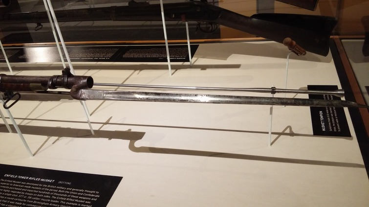

나폴레옹 시대 영국 전함의 전투 광경 - Lieutenant Hornblower 중에서 (15)
게시: 2019-05-20T06:30:42+09:00
전진이 시작되었다. 석회암이 둥글게 돔처럼 덮힌 반도의 꼭대기 위에는 긴 풀이 자라나 있었고, 간간히 나무도 있었다. 오솔길에서 벗어나면 높이 제멋대로 자란 억센 풀숲 때문에 걷는 것이 약간 어려웠지만 전반적으로는 걷기 쉬운 길이었다. 병력들은 촘촘히 뭉친 채로 대오를 유지하고 움직일 수 있었다. 이제 수병들의 눈이 완전히 어둠에 익숙해져서 별빛만으로도 길을 찾아갈 수 있을 정도였다. 혼블로워가 보고했던 도랑은 완만한 경사로 얕게 움푹 파인 것에 불과하여 건너는데 별 어려움이 없었다. 부시는 화이팅을 옆에 낀 채로 해병들의 선두에 서서 걸었다. 그의 주변은 마치 따뜻한 담요같은 암흑으로 감싸여 있었다. 이 행군에는 뭔가 마치 꿈결같은 분위기가 있었는데, 아마도 부시가 지난 24시간 동안 한순간도 잠을 자지 못한데다 그동안 겪은 피로로 멍해졌기 때문인 모양이었다. 요새가 위치한 곳은 반도에서 가장 높은 지점이었으므로 당연히 오솔길은 완만하게 오르막길이었다. "아!" 갑자기 화이팅이 소리를 냈다. 오솔길은 탁 트인 바다 쪽에서 멀어져 만으로 향하는 방향, 즉 오른쪽을 향해 굽어졌고, 그들은 반도의 등뼈에 해당하는 부분을 지나서 이제 만을 내려다보게 되었다. 오른쪽을 보니 만 아래까지가 훤히 보였고, 만 해변은 그렇게 어둡지 않았다. 낮게 깔린 구름을 뚫고 수평선 위에 달빛이 약간 비쳤기 떄문이었다. "미스터 부시, 부관님 ?" 이건 웰러드의 목소리였는데, 이번에는 좀더 가다듬은 목소리였다. "여기 있네." "미스터 혼블로워가 또 저를 보냈습니다, 부관님. 앞에 오솔길을 가로지르는 도랑이 하나 더 있습니다. 게다가 한떼의 가축과 맞닥뜨렸습니다, 부관님. 언덕에서 자고 있더라고요. 우리가 그것들을 꺠워서 지금은 여기저기 흩어져 있습니다." "고맙네, 잘 알겠네." 부시가 말했다. 부시는 그의 지휘 하에 있는 병력의 대부분을 차지하는 평범한 사내들과 평범 이하의 사내들을 아주 낮게 평가하고 있었다. 이 인간들이 오솔길을 따라가다 가축떼와 마주친다면 이들은 적과 만났다고 오인할 것이 틀림없었다. 설령 총성이 울리지 않는다고 하더라도 병력들이 몹시 흥분할 것이고 소음도 요란할 것이었다. "미스터 혼블로워에게 우린 여기서 15분간 멈춰 있겠다고 전하게." "예, 부관님." 시간이 허락한다면 지친 수병들에게 휴식하면서 저 뒤쪽 대오가 따라잡을 기회를 주는 것은 어쨌거나 바람직한 일이었다. 그리고 그렇게 쉬는 동안 수병들에게 가축떼를 만날 가능성에 대해 한명 한명에게 경고를 주는 것도 가능했다. 부시는 원래 멍청한데다 이렇게 지친 사내들에게 그저 대오를 따라 말을 전달하는 것은 충분치 않을 뿐만 아니라 꽤 위험한 일이라는 것을 알고 있었다. 그는 명령을 내려 대오를 멈추게 했는데, 졸면서 걷던 수병들은 걷다 멈춘 앞사람과 철커덕 소리를 내며 당연하다는 듯 부딪혔고 궁시렁거리며 욕설을 내뱉는 소리가 퍼졌다. 부사관들이 그런 소란을 조용히 시키느라 애를 먹었다. 풀밭에 드러누운 수병들에게 경고를 주고 있는 동안 부시관 하나가 또다른 문제거리를 부시에게 보고했다. "수병 블랙 말입니다, 부관님. 그 녀석 취했습니다." "취했다고 ?" "수통에 담아둔 독주를 마신 것이 틀림 없습니다, 부관님. 입에서 술냄새가 나거든요. 그걸 어떻게 손에 넣었는지는 모르겠슴다, 부관님." (Dunno 'ow 'e got it, sir.) 휘하에 100하고 80명이나 되는 수병들과 해병들이 있다보니, 그 중에 최소 하나는 취할 만도 했다. 어떻게든 술을 손에 넣고 기회만 되면 취해버리는 재주는 귀나 눈처럼 영국 수병 신체의 일부같은 것이었다. "지금 어디 있나 ?" "그 녀석이 소란을 피웠습니다, 부관님. 그래서 귓구녕에다 한방 먹여줬더니 지금은 조용함다, 부관님." (I clipped 'im on the ear'ole an' 'e's quiet now, sir.) 부시의 짐작에, 이 간단한 문장에는 말하지 않은 많은 이야기가 숨어 있는 것 같았다. 하지만 그는 더 물어볼 이유도 없었고 이제 어떻게 해야 하는지를 생각해야 했다. "믿을 만한 수병 하나를 골라서 우리가 출발할 때 블랙과 함께 남겨두고 가게." "예, 부관님." 결국 상륙조는 술에 취한 블랙을 잃었을 뿐만 아니라 그 녀석이 더 이상 말썽 못부리게 돌봐줄 수병 하나까지 추가로 잃은 셈이 되었다. 하지만 여태까지 더 많은 낙오자가 생기지 않았다는 것만으로도 꽤 운이 좋은 셈이었다. 대오가 다시 출발하자 저 앞에서 의심의 여지 없이 혼블로워가 확실해 보이는 후리후리하고 마른 체형의 실루엣이 희미한 달빛을 등지고 나타났다. 그는 부시 옆에서 보조를 맞추며 걸으며 상황을 보고했다. "요새를 눈으로 보았습니다, 부관님." "그런가 ?" "예, 부관님. 여기서 약 1마일 (1.6km) 떨어진 곳에 도랑 같은 것이 또 하나 나옵니다. 요새는 그 너머에 있고요. 달빛을 등지고 보입니다. 도랑에서 0.5 마일, 어쩌면 그보다 더 가깝습니다. 전위대가 오거든 도랑 앞에서 멈추게 하라는 명령과 함께 거기에 웰러드와 새들러를 남겨두고 왔습니다." "고맙네." 부시는 울퉁불퉁한 땅을 터벅터벅 걸어갔다. 피로에도 불구하고 그는 마치 먹이 냄새를 맡은 호랑이가 도약을 위해 근육에 힘을 주는 것처럼 다시 긴장이 고조되는 것을 느꼈다. 부시는 전투 체질이었고, 이제 곧 전투가 벌어진다는 생각은 그에게 자극제가 되었다. 앞으로 해뜨기까지 2시간. 시간은 충분했다. "도랑에서 요새까지 0.5 마일이라고 ?" 그가 물었다. "아마 그보다 더 가까울 겁니다, 부관님." "알겠네. 거기 멈춰서 해뜨기를 기다리지." "예, 부관님. 제 공격조에 합류하러 가도 되겠습니까 ?" "가도 좋네, 미스터 혼블로워." 부시와 화이팅은 대오 중에서 가장 느리고 서툰 사람들에게 맞춰 행군 속도를 느리고 꼼꼼한 발걸음 속도로 억제하고 있었다. 부시도 이 순간에는 전투에 대한 기대감으로 그의 보폭을 막 넓히려는 자기 자신을 억제하고 있는 중이었다. 혼블로워는 앞으로 성큼성큼 나아갔다. 부시는 그의 걸음걸이가 어색한 것을 보았지만, 이 부하의 넘치는 활력에는 감탄을 금할 수 없었다. 그는 화이팅과 최종 공격 작전을 의논하기 시작했다. 도랑 입구에는 부사관 하나가 그들을 기다리고 있었다. 부시는 대오 뒤로 멈출 준비를 하라는 말을 전달시킨 뒤, 조금 있다가 대오를 정지시켰다. 그는 앞으로 나가 정찰을 했다. 옆에 화이팅과 혼블로워를 낀 채로 그는 하늘을 배경으로 요사의 직사각형 실루엣을 관찰했다. 심지어 깃대까지도 어두운 직선 모양으로 보이는 것 같았다. 이제는 그의 긴장이 조금 풀렸다. 행군의 마지막 단계에서 병사들을 째려보던 그의 얼굴 표정이 이젠 긴박한 상황에서 실종되었던 사람 좋은 표정으로 되돌아왔다. 작전을 위한 조치는 신속하게 이루어져 명령이 나직한 목소리로 이리저리 전달되었으며, 마지막 주의가 내려졌다. 병력을 도랑 속으로 몰아넣었다가 돌격을 위해 포진시켜야 했으므로, 지금이 여태까지 중에서 가장 위험한 순간이었다. 화이팅의 조용한 한마디에 부시는 다소 머뭇거리며 고민을 했다. "병력들에게 장전해도 좋다는 허가를 내릴까요, 부관님 ?" "아니," 마침내 부시가 대답했다. "냉병기만 쓴다. (Cold steel.)"

(총알이 없는 빈 총이라고 해도 저렇게 시퍼런 날의 총검을 꽂으면 꽤 훌륭한 무기가 됩니다. 저런 총검은 사실상 베는 목적으로는 못 쓰고 찌르는 용도로만 쓸 수 있었습니다.)
어둠 속에서 이 많은 머스켓 소총에 장전을 허락한다는 것은 너무 위험 부담이 큰 일이었다. 장전봉이 딸그락거리는 소음이 필연적인데다, 어떤 바보가 방아쇠를 당길지 모르는 일이었다. 혼블로워는 좌측으로 갔고, 화이팅은 그의 해병들을 이끌고 우측을 행했으며, 부시가 그의 공격조를 이끌고 중앙에 드러누웠다. 그는 익숙하지 않은 행군으로 인해 다리가 아팠다. 드러누우니 피로와 수면 부족으로 인해 그의 머리는 헤엄을 치는 듯 잠으로 빠져들 것 같았다. 그는 정신을 다시 차리기 위해 일어나 앉았다. 지친 것 빼고는 기다리는 시간이 그에게 문제가 되지는 않았다. 셀 수 없이 많은 당직이 따르는 다년간의 바다 생활과, 지겹기 짝이 없는 다년간의 전쟁 기간은 그에게 기다리는 것에 익숙하게 했다. 일부 수병들은 바위투성이 도랑에 누웠다가 실제로 잠이 들어버렸다. 여기저기서 코 고는 소리가 났다가 옆사람이 툭 쳐서 깨웠는지 코 고는 소리가 갑자기 뚝 그치는 것을 부시는 여러차례 들었다.